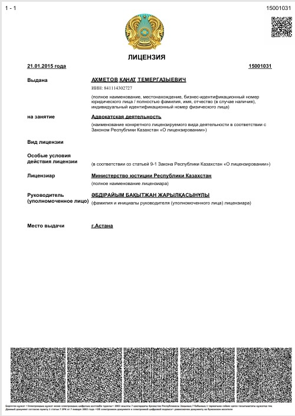

Ахметов Канат Темергазыевич — адвокат, осуществляющий профессиональную юридическую деятельность в Республике Казахстан.
Правовая помощь строится на анализе документов, оценке юридических рисков, формировании правовой позиции и защите интересов доверителя.

Профессиональный статус адвоката предполагает осуществление юридической помощи в соответствии с законодательством Республики Казахстан.
Адвокат Ахметов Канат Темергазыевич оказывает юридическую помощь физическим лицам, предпринимателям и организациям, включая защиту и представительство интересов в рамках конкретных поручений.
Работа по делу начинается с изучения документов и обстоятельств, определения юридически значимых фактов и оценки возможных правовых рисков. После этого формируется правовая позиция и определяется стратегия дальнейших действий.
Юридическая работа может включать как отдельную консультацию или подготовку процессуального документа, так и комплексное сопровождение дела или проекта.
Защита прав и законных интересов доверителей, анализ материалов дела, формирование позиции и участие в предусмотренных законом процедурах.
Анализ договорных и имущественных отношений, подготовка правовой позиции и представительство интересов по гражданско-правовым спорам.
Юридическое сопровождение предпринимателей, компаний и инвестиционных проектов, включая проекты с иностранным участием.
Работа в сфере товарных знаков и иных объектов интеллектуальной собственности с учётом статуса патентного поверенного Республики Казахстан.
Подготовка процессуальных документов, формирование доказательственной позиции и представительство интересов в судебных процедурах.
Правовое сопровождение отдельных трансграничных проектов и взаимодействие по юридическим вопросам, связанным с предпринимательской деятельностью Казахстана и Китая.
Для предварительной оценки ситуации необходимо определить предмет обращения и изучить основные документы.